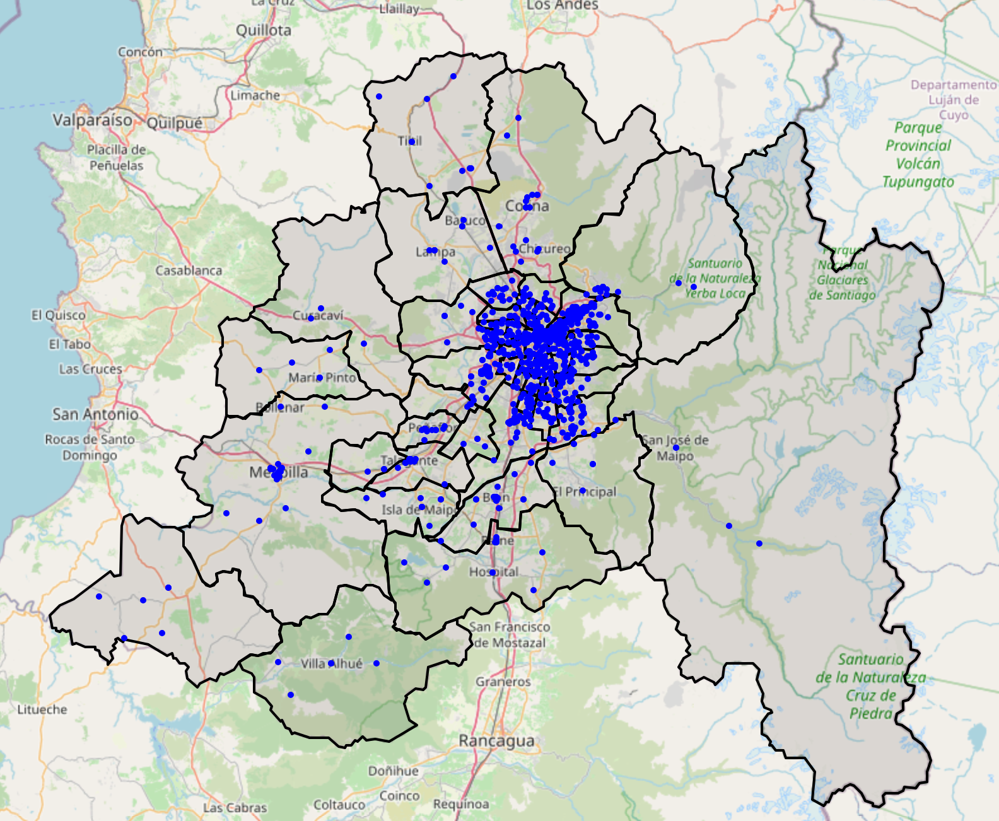
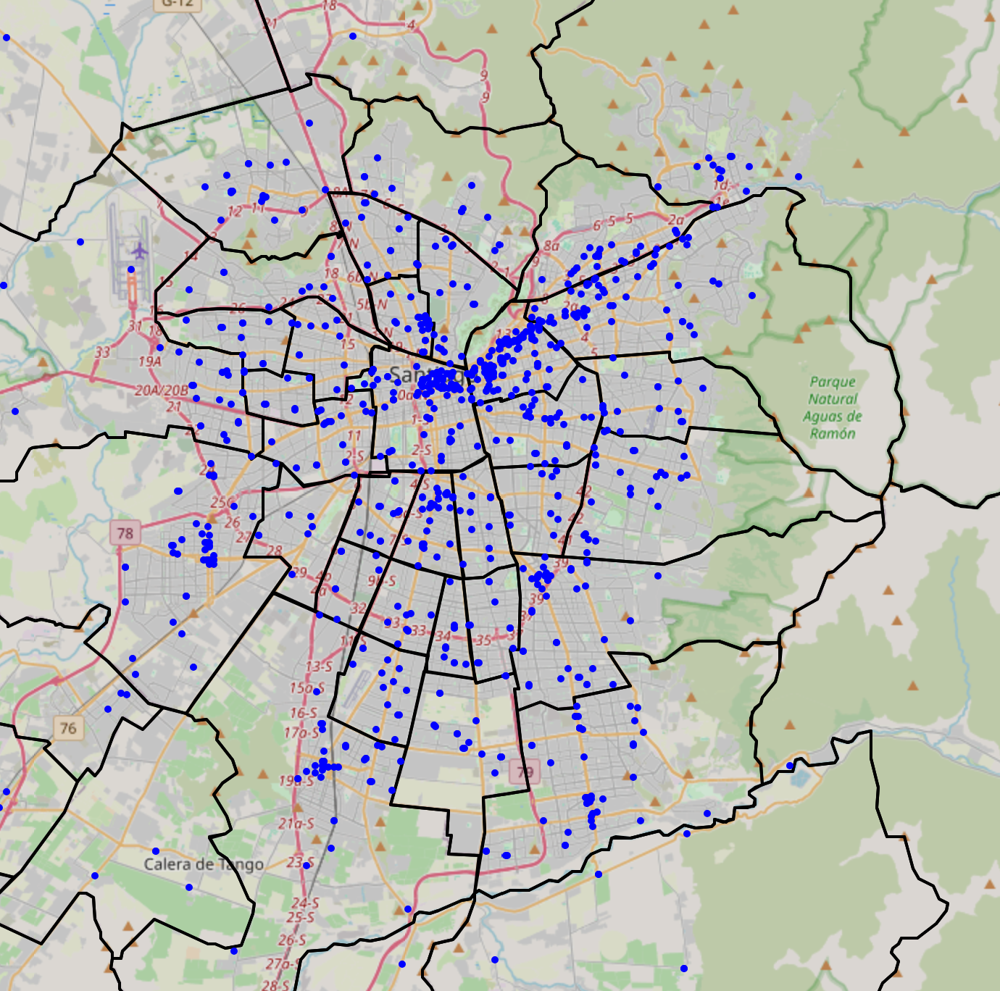
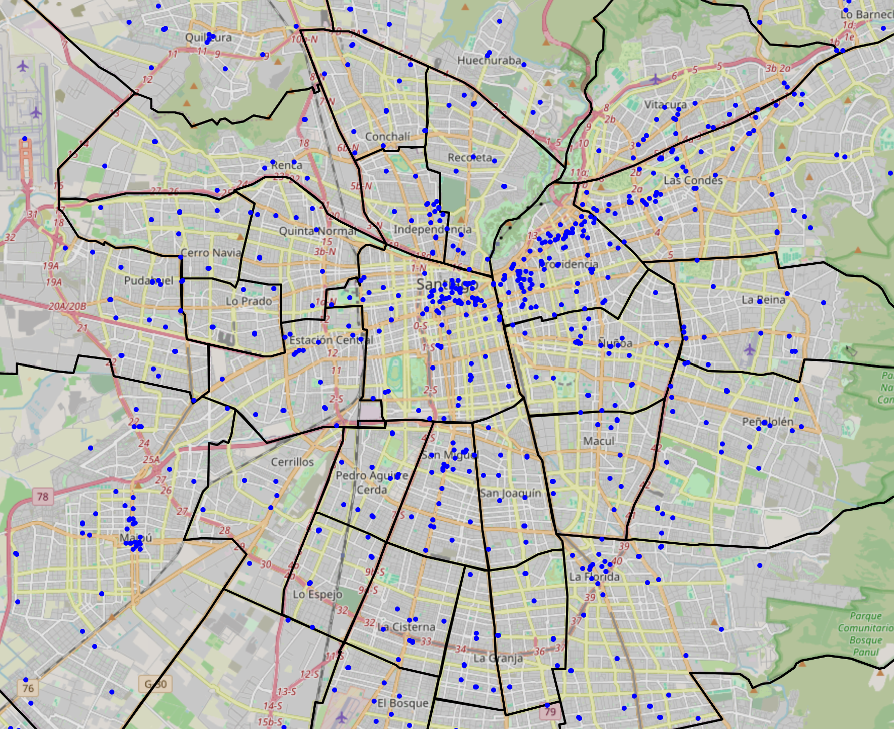

Proyecto Infovis
Martin Castro, Victoria Otárola, Josefa Venegas
La distribución de la infraestructura sanitaria en una ciudad no solo refleja su desarrollo urbano, sino también las desigualdades sociales que atraviesan a sus habitantes. En este proyecto, realizamos un análisis geográfico y social de los establecimientos de salud vigentes en la Región Metropolitana de Chile, utilizando datos abiertos publicados por el Ministerio de Salud. A través de una visualización basada en mapas de calor, buscamos identificar patrones de concentración y carencias en la ubicación de hospitales, consultorios, clínicas y otros centros médicos. Nuestro objetivo es evidenciar las diferencias entre comunas urbanas y periféricas en el acceso a la atención en salud, promoviendo así una reflexión informada sobre la equidad territorial.
Nuestra visualización muestra la distribución de los distintos tipos de establecimientos de salud vigentes en la Región Metropolitana.



Los datos fueron extraídos de datos.gob.cl, trabajados de tal forma que datos nulos o poco representativos fueran borrados y filtrados según características que favorecieran nuestro análisis.